항공기관정비기능사 (2013-07-21 기출문제)
1과목: 비행원리
1. 항공기가 등속도 수평비행을 하는 조건식으로 옳은 것은? (단, 양력=L, 항력=D, 추력=T, 중력=W 이다.)
- L＞W, T＞D
- L=T, W=D
- L＞D, W＜T
- L=W, T=D
(정답률: 82%)

2. 공기 흐름상에 평판을 놓았을 때, 평판에 작용하는 공기력은 어떤 값에 비례하는가? (단, ρ: 공기밀도, V: 공기의 흐름속도, S: 평판의 면적이다.)
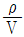
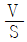
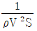
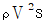
(정답률: 79%)
3. 다음 중 비행기의 세로 안정에서의 평형(Trim)상태를 나타낸 것은? (단, Cm은 키놀이 모멘트계수이다.)
- Cm=0
- Cm＞0
- Cm＜0
- Cm≠0
(정답률: 91%)
4. 프로펠러 다 단면에서의 공기 속도와 항공기 비행속도의 차이를 말하며, 프로펠러에 의해 순수하게 가속된 공기속도를 무엇이라 하는가?
- 유도속도
- 선속도
- 대응속도
- 합성대기속도
(정답률: 60%)
5. 헬리콥터의 총중량이 700kg, 회전날개의 반지름이 2.5m, 회전날개 깃 수가 2개일 때 원판 하중은 약 몇 kg/m2인가?
- 30.65
- 35.65
- 61.30
- 142.60
(정답률: 64%)
6. 음속에 가까운 속도로 비행을 하게 되면 속도가 증가될수록 비행기의 기수가 내려가는 경향이 생겨 조종간을 당겨야 하는 현상이 발생하는데 이 현상을 무엇이라 하는가?
- 더치 롤(Dutch roll)
- 내리 흐름(Down wash)
- 턱 언더(Tuck under)
- 마하 트림(Mach trim)
(정답률: 82%)
7. 마하수 (Mach number)에 대한 설명으로 옳은 것은?
- 마하수의 단위는 m/s 이다.
- 마하수는 음속에 반비례한다.
- 비행속도가 일정하면 고도에 관계없이 마하수도 일정하다.
- 비행속도가 일정하면 마하수는 오 seh가 높을수록 비례하여 커진다.
(정답률: 66%)
8. 비행기 상승률이 “0” 일 때 관계식으로 옳은 것은?
- 이용마력 ＞ 필요마력
- 여유마력 = 필요마력
- 여유마력 ＜ 이용마력
- 이용마력 = 필요마력
(정답률: 77%)
9. 큰 날개와 수평꼬리날개에 의한 무게중심 주위의 키놀이 모멘트(M) 관계식으로 옳은 것은? (단, MW은 큰 날개만에 의한 키놀이 모멘트, MT은 수평꼬리날개에 의한 키놀이 모멘트이다.)
- M = MW+MT
- M = MW-MT
- M = MWxMT
- M = MW÷MT
(정답률: 79%)
10. 낙하산을 이용하여 조종사가 5000m 의 상공에서 일정 속도로 하강하고 있다. 조종사의 무게 90kg, 낙하산 지름 6m, 항력계수 2.0 일 때 낙하 속도는 몇 m/s 인가? (단, 공기의 밀도 1.0kg/m3, g: 중력가속도이다.)
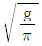
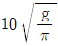
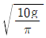
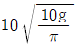
(정답률: 66%)
11. 단면적이 일정하게 유지되다가 급격히 넓어지는 관로를 공기가 초음속으로 흐를 때의 특징으로 틀린 것은?
- 충격파가 발생한다.
- 공기의 속도가 증가한다.
- 공기의 온도가 떨어진다.
- 공기의 압력이 떨어진다.
(정답률: 52%)
12. 길이가 짧은 날개와 비교한 길이가 긴 날개의 장점으로 틀린 것은?
- 양력계수가 크다.
- 유도항력계수가 크다.
- 날개의 효율이 좋다.
- 날개 끝 와류가 적다.
(정답률: 53%)
13. 대류권을 이루고 있는 공기의 구성성분을 구성비에 따라 작은 것부터 순서대로 옳게 나열한 것은?
- 질소 - 산소 - 아르곤 - 이산화탄소
- 질소 - 산소 - 이산화탄소 - 아르곤
- 이산화탄소 - 아르곤 - 산소 - 질소
- 아르곤 - 이산화탄소 - 질소 - 산소
(정답률: 63%)
14. 평면모양을 구분한 날개의 종류가 아닌 것은?
- 후퇴날개
- 전진날개
- 테이퍼날개
- 낮은날개
(정답률: 75%)
15. 헬리콥터 회전 날개의 회전면과 원추 모서리가 이루는 원추각에 영향을 주는 것으로만 짝지어진 것은?
- 추력과 항력
- 원심력과 양력
- 원심력과 항력
- 원심력과 추력
(정답률: 75%)
16. 비행장에 설치된 시설물, 장비 및 각종 기기는 작업자의 안전을 위해 안전색채 표지로 구분하는데 인화성 물질이나 폭발성 액체 및 폭발물 등에 칠하는 안전색채는?
- 녹색
- 파란색
- 노란색
- 붉은색
(정답률: 79%)
17. 화재의 분류 중 전기가 원인이 되어 전기기기 또는 전기 계통에 일어 나는 화재의 종류는?
- A급 화재
- B급 화재
- C급 화재
- D급 화재
(정답률: 90%)
18. 다음 중 일반적으로 다이얼게이지로 측정할 수 없는 것은?
- 편심의 측정
- 평면의 요철 측정
- 흔들림의 측정
- 너트의 안지름 측정
(정답률: 65%)
19. 다음 문장의 ( )의 안에 알맞은 단어는?
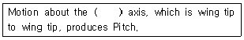
- lateral
- flight
- vertical
- longitudinal
(정답률: 56%)
20. 토크렌치와 연장 공구를 이용하여 볼트를 400in-lb로 체결하려 한다. 토크렌치와 연장 공구의 유효길이는 각 각 25in 와 15in 이라면 토크렌치의 지시값이 몇 in-lb를 지시할 때까지 죄어야 하는가?
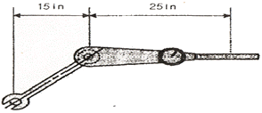
- 150
- 200
- 240
- 250
(정답률: 64%)
2과목: 항공기정비
21. 중력식과 비교한 압력식 연료 보급법의 장점이 아닌 것은?
- 주유시간 절약
- 항공기 접지 불필요
- 항공기 표피손상 감소
- 연료 오염 가능성 감소
(정답률: 85%)
22. 다음 중 항공기의 정시점검에 해당되는 것은?
- 수리 및 개조
- 내부 구조 검사
- 정비개선 회보에 의한 검사
- 감항성 개선 지시에 의한 검사
(정답률: 52%)
23. 다음과 같은 리벳의 규격에 대한 설명으로 옳은 것은?
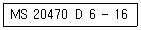
- 접시머리 리벳이다.
- 특수 표면처리 되어 있다.
- 리벳의 지름은
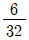
인치이다. - 리벳의 길이는
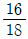
인치이다.
(정답률: 68%)
24. 항공기 도장(Painting)의 주된 목적으로 옳은 것은?
- 열전도 차단
- 정전기발생방지
- 부식방지 및 외관장식
- 재료의 강도증가
(정답률: 85%)
25. 검사경비가 저렴하고 표면검사 능력이 우수하여 형상이 간단한 제품의 고속 자동화 검사가 가능한 검사방법은?
- 와전류검사
- 초음파검사
- X-Ray
- 침투탐상검사
(정답률: 60%)
26. 다음 밑줄 친 부분의 내용으로 옳은 것은?
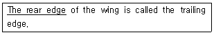
- 앞부분
- 뒷부분
- 옆부분
- 동체부분
(정답률: 72%)
27. 항공기 사용시간에 대한 설명으로 옳은 것은?
- 항공기가 비행을 목적으로 램프에서 자력으로 움직이기 시작한 순간부터 착륙하여 정지할 때까지의 시간
- 항공기가 비행을 목적으로 활주로에서 이륙한 순간부터 착륙하여 정지할 때까지의 시간
- 항공기가 비행을 목적으로 램프에서 자력으로 움직이기 시작한 순간부터 착륙하여 땅에 닿는 순간까지의 시간
- 항공기가 비행을 목적으로 이륙하여 바퀴가 떨어진 순간부터 착륙하여 땅에 닿는 순간까지의 시간
(정답률: 52%)
28. 항공기 정비에서 잭 작업(Jacking) 에 대한 설명으로 틀린 것은?
- 항공기의 잭 작업은 주로 실외에서 실시해야 하며, 항공기의 정면은 바람의 방향과 반대방향이 되도록 한다.
- 착륙장치의 바퀴 하나만 들어 올릴 때에는 단일 잭을 사용한다.
- 항공기는 최소 높이로 올리되 잭의 안전성을 보장할 수 있는 잭의 제한 길이 이내로 올린다.
- 항공기를 들어 올릴 때에는 각 잭마다 한사람씩 있어야 하며 주관자의 지시에 따른다.
(정답률: 72%)
29. 작동유(Hydraulic fluid) 가 항공기 타이어(Aircraft tire) 에 묻어있어서 이것을 제거할 때 가장 적합한 세척제는?
- 알코올
- 솔벤트
- 휘발유
- 비눗물과 더운물
(정답률: 80%)
30. 판금가공에서 사용되는 용어에 대한 설명으로 옳은 것은?
- 재료의 최소 굽힘 반지름이란 판재를 최소 예각으로 굽힐 수 있는 반지름이다.
- 세트백이란 판재를 두들겨서 모양을 성형하는 것이다.
- 스프링 백이란 굽힘의 시작점과 끝점을 연결한 반지름이다.
- 굽힘 여유란 굴곡된 판 바깥면의 연장선 교차점과 굽힘접선과의 거리이다.
(정답률: 60%)
31. 그림과 같은 표시가 되어있는 볼트는?
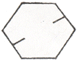
- 크레비스볼트
- 재가공볼트
- 알루미늄합금볼트
- 저강도볼트
(정답률: 76%)
32. 리벳작업 시 판재가 너무 얇아 카운터싱크(Countersink)를 할 수 없을 경우 적용하는 방법은?
- 본딩(Bonding)
- 딤플링(Dimpling)
- 드릴링(Drilling)
- 챔퍼링(Chamfering)
(정답률: 77%)
33. 그림과 같은 외측 마이크로미터를 보관할 때 또는 0점 조정시 쓰이는 부품은?
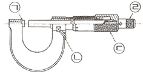
- ㉠
- ㉡
- ㉢
- ㉣
(정답률: 57%)
34. 다음 중 래칫 핸들(Ratchet handle) 은?
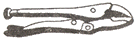
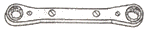
(정답률: 86%)
35. 침투탐상검사법에서 침투제가 침투되는 원리는?
- 사이폰 현상
- 관성력
- 모세관 현상
- 베르누이 정리
(정답률: 74%)
36. 오일 여과기에 있는 바이패스 밸브(By-pass valve) 의 주된 기능은?
- 오일을 보기부분으로 보낸다.
- 오일 냉각기 둘레로 오일을 직접 보내준다.
- 릴리프 밸브(Relief valve) 의 역할을 한다.
- 여과기가 막힐 경우 오일이 정상적으로 흐르도록 한다.
(정답률: 81%)
37. 4행정 항공기용 왕복기관 중 대향형 기관의 캠축은 크랭크축 회전속도의 얼마인가?
- 1/4
- 1/2
- 2배
- 4배
(정답률: 56%)
38. 카르노사이클이 427℃ 와 77℃ 의 온도 범위에서 작동할 때 열효율은 몇 % 인가?
- 0.3
- 0.4
- 0.5
- 0.6
(정답률: 58%)
39. 마스터와 아티큘레이터 (Master and Articulater) 형 커넥팅 로드는 주로 어떤 기관에 사용되는가?
- V 형 기관
- 수평대향형 기관
- 성형 기관
- 직렬형 기관
(정답률: 64%)
40. 제트기관의 압축비(Compressor Pressure Ratio)를 나타낸 식으로 옳은 것은?
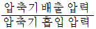
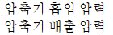
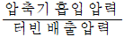
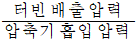
(정답률: 60%)
3과목: 항공기관
41. 항공기가 비행을 할 때 사용하는 마력으로서 열효율이 가장 좋은, 즉 연료소비율이 가장 작은 상태에서 얻어지는 동력은?
- 이륙마력
- 정격마력
- 순항마력
- 최대마력
(정답률: 74%)
42. 가스터빈기관이 지상이나 비행 중 기관이 자립 회전할 수 있는 최저 상태는?
- 이륙 출력
- 아이들 출력
- 순항 출력
- 최대 연속 출력
(정답률: 80%)
43. 축류식 압축기에서 로터 깃과 스테이터 깃은 어떤 작용을 하는가?
- 공기 속도를 감소시키고 압력을 감소시킨다.
- 공기 속도를 감소시키고 압력을 증가시킨다.
- 공기 속도를 증가시키고 압력을 감소시킨다.
- 공기 속도를 증가시키고 압력을 증가시킨다.
(정답률: 60%)
44. 소음 종류에 따른 방지책에 대한 설명으로 틀린 것은?
- 코어소음 - 소음 흡수판을 사용한다.
- 터빈 소음 - 로터와 스테이터의 수를 최적의 조건으로 선택한다.
- 팬소음 - 공력 분산효과를 위해 다단의 팬을 사용한다.
- 배기소음 - 배기노즐의 단면을 꽃입형 등으로 바꿔 대기와 홉합되는 면적을 넓힌다.
(정답률: 61%)
45. 기관 부품에 윤활이 적절하게 될 수 있도록 윤활유의 최대 압력을 제한하고 조절하는 윤활 계통 장치는?
- 윤활유 냉각기
- 윤활유 압력 게이지
- 윤활유 여과기
- 윤활유 압력 릴리프밸브
(정답률: 75%)
46. 그림과 같은 터빈 깃의 냉각방법은?
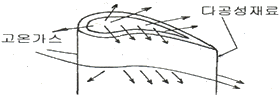
- 공기막냉각(Film Cooling)
- 충돌냉각(Impingement Cooling)
- 대류냉각(Convenction Cooling)
- 침출냉각(Transpiration Cooling)
(정답률: 54%)
47. 내부에너지가 25kcal 인 정지 상태의 물체에 열을 가했더니 50kcal 로 증가하고, 외부에 대해 854kg·m 의 일을 했다면 외부에서 공급된 열량은 몇 kcal 인가? (단, 열의 일당량은 427kg·m/kcal 이다.)
- 17
- 27
- 30
- 50
(정답률: 49%)
48. 착륙 후 활주거리를 단축하기 위해 깃 각을 부(-)의 값으로 바꿀 수 있는 프로펠러 형식은?
- 역피치 프로펠러
- 페더링 프로펠러
- 정속피치 프로펠러
- 두 지점 프로펠러
(정답률: 74%)
49. 다음 중 왕복기관과 비교하였을 때 가스터빈기관의 특징으로 틀린 것은?
- 초음속 비행이 가능하다.
- 기관 중량당 출력이 크다.
- 추운곳에서도 시동이 용이하다.
- 연료의 소비량이 적고 소음이 적다.
(정답률: 69%)
50. 가스터빈기관의 물 분사장치에서 알코올의 주 기능은?
- 물이 어는 것을 방지하기 위하여
- 공기의 밀도를 증가시키기 위하여
- 공기의 부피를 증가시키기 위하여
- 연소가스의 온도를 감소시키기 위하여
(정답률: 73%)
51. 구조가 간단하며 전체길이가 짧고 연소실의 단면적을 전면적과 비교해 최대한 소형으로 제작 가능한 연소실은?
- 직류형 연소실
- 캔형 연소실
- 애뉼러형 연소실
- 캔 애뉼러형 연소실
(정답률: 63%)
52. 기화기의 구성 장치 중 스로틀 밸브가 거의 닫혀서 주 노즐에서 연료가 분출되지 않을 때 작동되는 장치는?
- 저속 장치
- 혼합비 조절 장치
- 가속 장치
- 이코노마이저 장치
(정답률: 43%)
53. 상업용으로 생산되는 항공용 왕복기관의 가솔린 등급이 아닌 것은?
- 100LL
- A-1
- 80
- 100
(정답률: 64%)
54. 가스터빈기관의 연료가 갖추어야 할 조건이 아닌 것은?
- 빙점이 높아야 한다.
- 증기압이 낮아야 한다.
- 단위 중량당 발열량이 커야 한다.
- 대량 생산이 가능하고 가격이 싸야한다.
(정답률: 58%)
55. 왕복기관에서 과급기(Supercharge) 가 없는 기관의 매니폴드 압력과 대기압과의 관계를 옳게 설명한 것은?
- 높은 고도에서만 매니폴드 압력은 대기압보다 높다.
- 낮은 고도에서만 매니폴드 압력은 대기압보다 높다.
- 고도와 관계없이 매니폴드 압력은 대기압보다 낮다.
- 고도와 관계없이 매니폴드 압력은 대기압과 같다.
(정답률: 61%)
56. 대형 가스터빈기관에 일반적으로 많이 사용되는 시동기(Starter) 는?
- 블리드(Bleed) 시동기
- 관성형(Inertia type) 시동기
- 탄약형(Cartridge type) 시동기
- 뉴매틱형(Pneumatic type) 시동기
(정답률: 65%)
57. 왕복기관을 작동할 때 반드시 점검해야 할 한계수치 값이 아닌 것은?
- 대기 온도
- 윤활유 압력
- 실린더 헤드 온도
- 기관 회전수
(정답률: 56%)
58. 저온으로 작동되는 기관에 콜드(Cold)형 점화 플러그가 장착되었을 때 일어나는 현상으로 옳은 것은?
- 역화 현상이 발생한다.
- rpm이 순간적으로 높아진다.
- 기관에 조기점화현상이 발생한다.
- 점화플러그에 파울링(Fouling)을 초래한다.
(정답률: 50%)
59. 다음 중 역화(Back Fire)가 일어날 수 있는 주된 조건은?
- 과희박 혼합기
- 과도한 실린더 압력
- 빠른 화염전파속도
- 과도한 실린더 온도
(정답률: 58%)
60. 그림과 같은 기관의 명칭은?
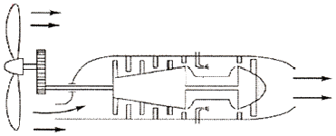
- 터보팬기관
- 터보프롭기관
- 터보축기관
- 터보제트기관
(정답률: 71%)
따라서, 항공기가 등속도 수평비행을 하기 위한 조건식은 다음과 같습니다.
L = W, T = D
여기서 L은 양력, W는 중력, T는 추력, D는 항력을 나타냅니다.
양력과 중력이 균형을 이루면 항공기는 공중에 떠 있을 수 있고, 추력과 항력이 균형을 이루면 항공기는 등속도로 비행할 수 있습니다.
따라서, L=W, T=D 조건식이 항공기가 등속도 수평비행을 하는 조건식입니다.